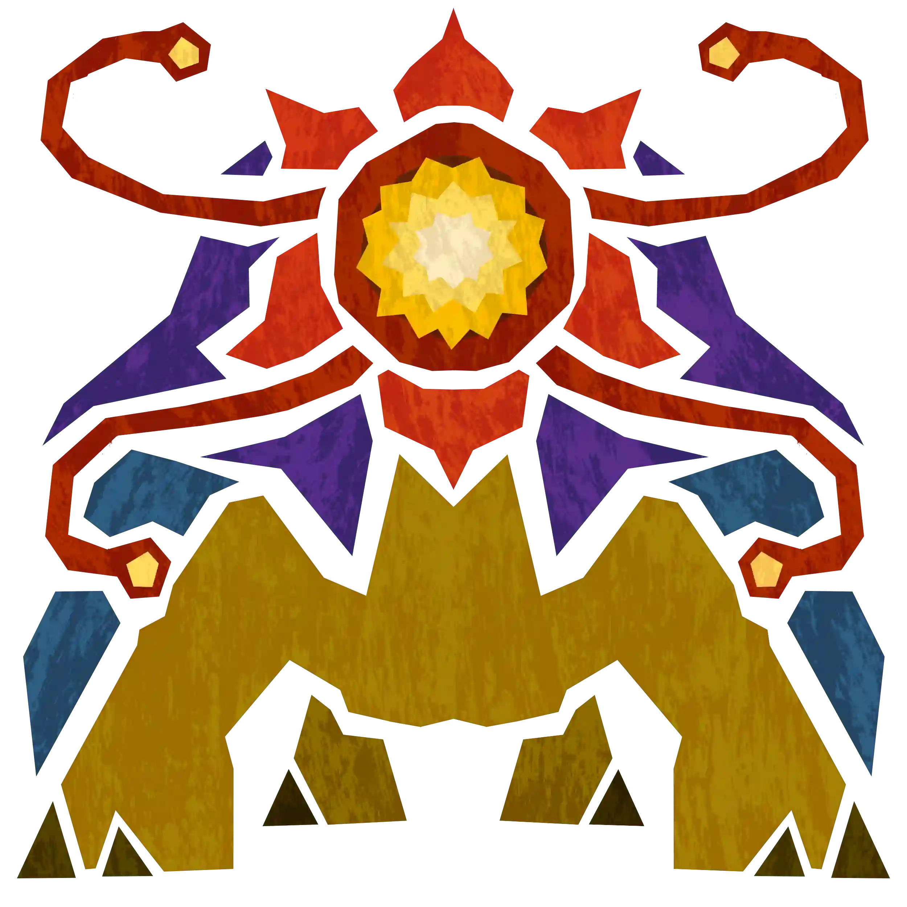

La Vémufla es una especie de apariencia hostil y depredadora, que utiliza sus habilidades de camuflaje para atraer a posibles fuentes de alimento, desde insectos hasta mamíferos pequeños.

La mayor parte de su tiempo de vida reposan en un pozo de cuatro metros de profundidad que excavan al llegar a su etapa adulta. Ahí, utilizan una membrana que nace de la parte superior de su cabeza, parecida a un velo o tela, llamada Fleva, para cubrir el agujero de su microhábitat. La Fleva está hecha de un composición biológica altamente reflectiva, cercana a un espejo; con esto, la Vémufla puede reflejar el color del cielo, creando la ilusión óptica de un pequeño cuerpo de agua sobre el árido suelo de Guéfide.

Mientras está a la espera de una víctima, este depredador utiliza sus redimentarias cuerdas vocales para emitir un sonido continuo de muy baja frecuencia. Cuando percibe con su minúsculo pero avanzado sistema auditivo que el sonido ha creado un eco ante un cuerpo extraño, sabe que es el momento para su ataque.
En ese instante es cuando la criatura sale rápidamente de su escondite, gracias a sus fuertes y ágiles extremidades, mostrando su gran envergadura ante la víctima. Para aturdir a la víctima, cuenta con una luz extremadamente poderosa dentro de su boca y unos tentáculos que terminan en puntas esféricas que también emiten luz. La Vémufla mueve frenéticamente estas fuentes luminosas para ofuscar los ojos de la víctima. Es entonces que acerca su boca con la ayuda de su cuello flexible y termina por engullir a la víctima.